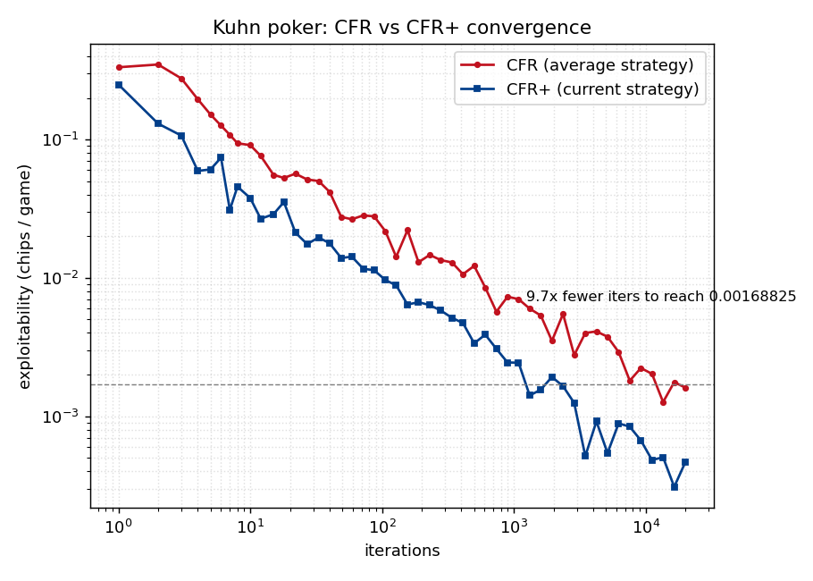
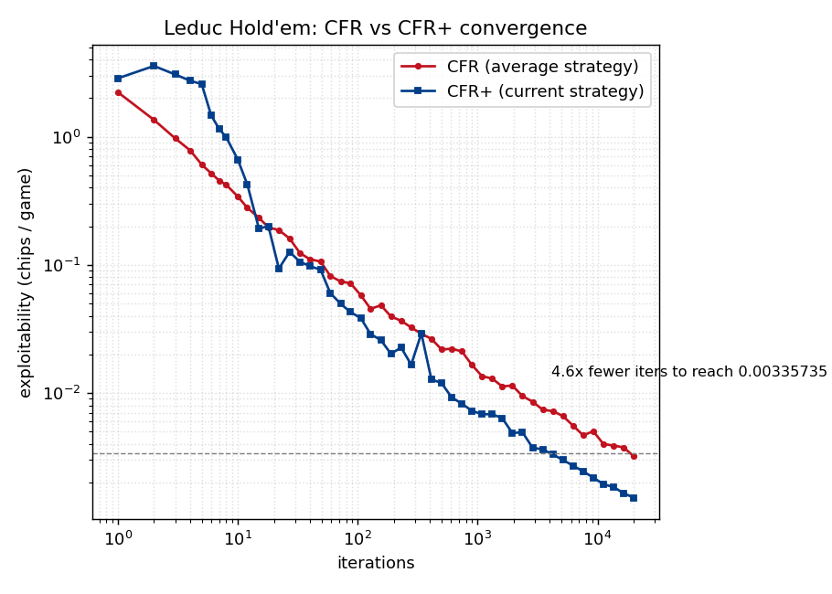

CFR and CFR+ solvers for Kuhn and Leduc poker, built from the original papers and checked against ground truth. I solved the strategies offline and exported them, so the bot here plays a near-Nash equilibrium. You can't beat it over the long run. Try anyway.
You swap seats every hand to keep it fair. The bot never adapts; it plays the one solved strategy.
Kuhn poker has a closed-form solution, so a correct solver must reproduce it.
I checked the solver three ways. It reproduces Kuhn's exact game value,
−1/18. The recovered opening strategy lands in the analytic
α-family: bet the King three times as often as the Jack, and never
the Queen. A best-response evaluator measures exploitability, how much the
sharpest counter-strategy could win, and drives it toward zero. CFR+ hits the same
accuracy in about a tenth of vanilla CFR's iterations.

